Project Report
Robot Companion
Design a virtual or physical AI companion for emotional support and engagement of elderly individuals (with potential future collaboration with NUS Nursing).
Scope of this report. A proof-of-concept platform: a mechanically-expressive head, a touchscreen face, and a fully-offline voice loop. Domain fine-tuning, a soft shell, and a larger compute board remain future work (Ch. 12).
National University of Singapore
Acknowledgments
I thank my project supervisor, A/Prof Khoo Eng Tat, for his patient guidance throughout this project.
I also acknowledge the open-source community whose projects make an on-device stack of this scope possible on a single 8 GB edge board, in particular the authors and maintainers of llama.cpp, Parakeet TDT, Silero VAD, Piper, YOLO26n-pose, and HSEmotion.
Table of Contents
Abstract
A first-steps, proof-of-concept prototype of an AI social companion robot for elderly care, scoped for potential future collaboration with NUS Nursing. Runs entirely on a Jetson Orin Nano 8 GB with no cloud. Core: a custom 2-DOF differential-bevel head driven by two ST3215 servos; an on-device voice loop (VAD, STT, LLM, TTS) fed by a CSI camera and 4-mic array; and a 2.8 inch ESP32 touchscreen rendering an affect-driven face. The 8 GB memory budget forced a text-only LLM and disabled concurrent affect perception; both are one headroom upgrade away. Future work covers a domain-specific LLM fine-tune, a soft outer shell with tactile sensing, and a larger compute platform.
1. Introduction
1.1 The brief
The starting point for this project, scoped for potential future collaboration with NUS Nursing, was a single-sentence brief:
Clinical work on companion robots such as PARO (Wada and Shibata, 2007; Ito et al., 2013) shows that a small embodied presence can reduce agitation and isolation when the system is present, responsive, and approachable. The brief is open on virtual versus physical. This project takes the physical route, because a body that can look at you, speak to you, and be seen by you is qualitatively different from software on a screen.
1.2 Scope of this report
This is a first-steps, proof-of-concept platform. The aim is to prove the engineering core is sound, not to ship a clinical product. The table below summarises what the prototype delivers and what is deferred to later roadmap steps.
| Dimension | Delivered now | Deferred to future work |
|---|---|---|
| Physical expressivity | 2-DOF differential-bevel head (primary mechanical contribution). | Soft plush shell with pressure-touch regions. |
| Face rendering | 2.8 inch ESP32 touchscreen; 13 expressions driven by LLM affect tags. | None. |
| Voice interaction | Full offline loop: VAD, STT, LLM reasoning, TTS. | Custom wake word; persistent per-user memory. |
| Language model | Llama 3.2 1B, text-only, general-purpose. | Domain-specific fine-tune on clinical data. |
| Compute platform | Jetson Orin Nano 8 GB (lower bound for the stack). | Orin NX 16 GB or AGX class to re-enable multimodal LLM and concurrent affect perception. |
| Affect perception | HSEmotion classifier verified standalone. | Running concurrently with the voice loop (blocked on memory, see Chapter 11). |
Framed as a roadmap: step one is the platform in this report; step two is a domain-specific language-model fine-tune on a larger compute board; step three is the soft shell and tactile sensing; step four is a clinical pilot, potentially with NUS Nursing.
2. Background and related work
2.1 Affective-companion precedents
The design space clusters around three commercial references. Each emphasises a different communication channel, and this project deliberately draws from all three.
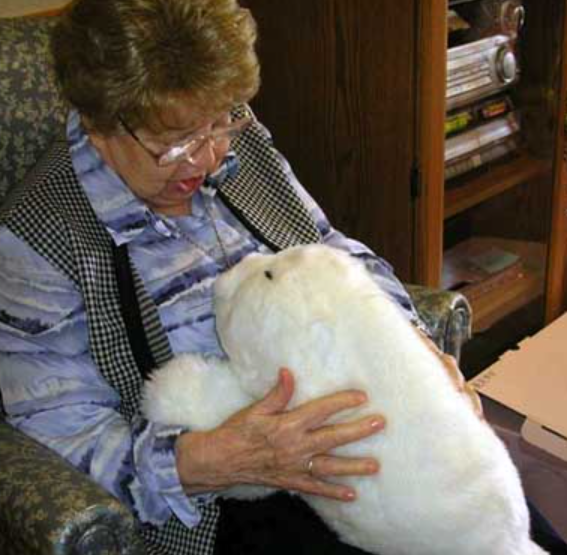
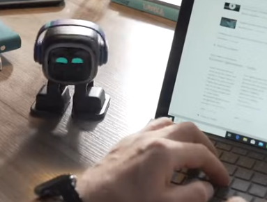
| Reference | Primary channel | Design takeaway |
|---|---|---|
| PARO (Shibata, 2012) | Tactile plush with subtle motion. | A small embodied presence demonstrably reduces agitation; motivates the head-first design. |
| LivingAI EMO (Living.ai, 2022) | Expressive motion plus animated screen-eyes. | Closest analogue to the face-plus-head pattern used here. |
| Qoobo (Yamamoto, 2018) | Motion only (a single tail). | A single well-controlled degree of freedom already carries presence. |
2.2 Why head orientation and on-device AI
Head orientation is one of the most economical cues humans use to judge attention. A system that simply looks at you when you speak reads as attentive in a way static rendering cannot match; this project places that cue at the centre of its physical expressivity.
The whole loop runs on-device for two concrete reasons. Privacy: a companion robot in a care setting should not stream raw audio or video to a cloud provider. Latency: sub-second turn response needs tight local coupling, not an internet round-trip. Three recent developments have made this practical on an 8 GB edge SoC: 4-bit GGUF quantisation for LLMs (Gerganov, 2023), ONNX-optimised streaming ASR (NVIDIA, 2024), and lightweight CPU-only neural vocoders (Rhasspy Project, 2023); Mehrish et al. (2023) surveys this class of stack. The Jetson Orin Nano 8 GB is viable but tight, as Chapter 11 details.
3. System overview
With the design rationale in place, this chapter lays out the system as a whole: the hardware components, how they connect, and how the software is layered. The two chapters that follow (4 and 5) then zoom into the mechanical side, and Chapters 6 to 9 do the same for the software side.
3.1 Hardware topology
The robot is one Jetson with six peripherals, each a direct single-cable link (Figure 1). The Jetson Orin Nano 8 GB (JetPack 6) is the sole compute node; it carries both the CPU workload (Python orchestration, VAD, TTS) and the GPU workload (LLM, STT, vision) on its unified LPDDR5 memory. Around it sit: a ReSpeaker 4-mic USB array (XMOS XVF-3800, 12-LED ring) for audio capture and on-board direction-of-arrival estimation; an IMX219 CSI camera (640 × 480 at 30 fps over the MIPI ribbon) for face tracking; a Diymore 2.8 inch ESP32 TFT (ILI9341 display, XPT2046 touch, CH340 USB-serial) which renders the expressive face and returns touch events; two Feetech ST3215 smart servos (mirror-mounted 20-tooth pinions driving the head) addressed over a Waveshare CH343 bus adapter that runs a 1 Mbaud half-duplex Feetech bus; and a USB speaker for TTS output.
The topology is deliberately point-to-point: every peripheral has its own cable to the Jetson, which keeps USB bandwidth contention predictable and lets any device be swapped without disturbing the rest. The one exception is the servo bus, which daisy-chains the two ST3215 motors behind the CH343 adapter. That bus is the only shared medium in the system, and the kinematics chapter (Chapter 5.3) covers the protocol quirks that come with it.
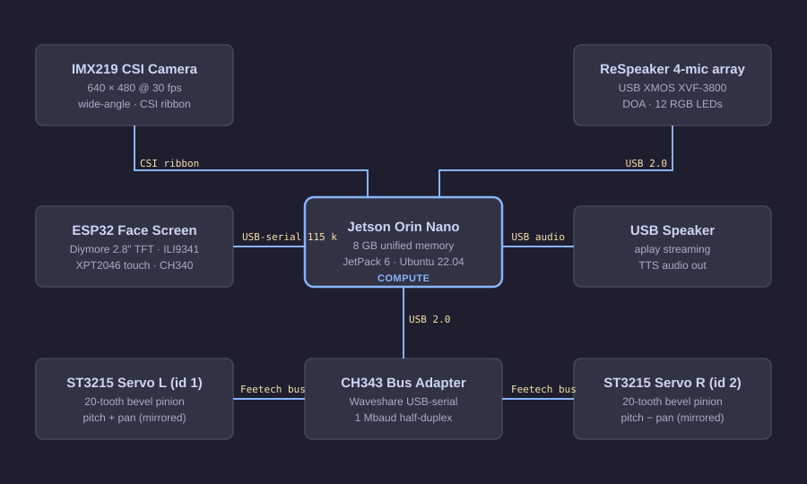
3.2 Software architecture
The software is one Python process organised as three layers (Figure 2). Leaf subsystems wrap each piece of hardware or model: audio/ (mic I/O, Silero VAD, Parakeet STT, Piper TTS, ReSpeaker DOA, barge-in detector), vision/ (CSI camera, YOLO26n-pose, face tracker, HSEmotion classifier), llm/ (llama.cpp engine, prompt builder, router), and motor/ + display/ + firmware/ (ST3215 bus, kinematics, calibration wizard, ESP32 face renderer). None of the leaves talk to each other directly.
Above them, two orchestrators do the real work. ConversationManager (conversation/manager.py) owns the turn lifecycle, the state machine, the engagement gates (face visible, minimum speech, DOA concordance), and the streaming hand-off from STT to LLM to TTS. BehaviorEngine + Coordinator runs a 20 Hz face-and-head tick that keeps gaze on the tracked face, animates idle micro-motion, and reacts to affect tags emitted by the LLM.
Both orchestrators lean on the core plumbing layer (core/): an async EventBus, a two-priority GPU arbiter that lets conversation-critical work preempt background captioning, a readiness gate that audits every required model file at startup, a HealthMonitor watchdog, and a JSONL telemetry trace per turn. main.py is the entry point and wires the bring-up in a fixed order (Chapter 8). Full per-subsystem index in the repository README.
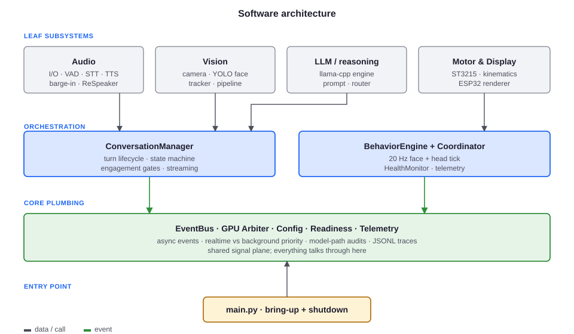
4. Mechanical design and iteration history
The head is the primary physical contribution, so the mechanical side came first. It went through six CAD revisions before it worked reliably, each exposing a new failure mode. Revisions are labelled P1–P5 (“Prototype 1” through “Prototype 5”) below the initial concept. The grid presents every iteration side-by-side; the lessons table that follows captures what each revision taught.
4.1 CAD iterations
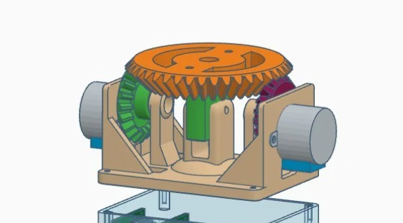
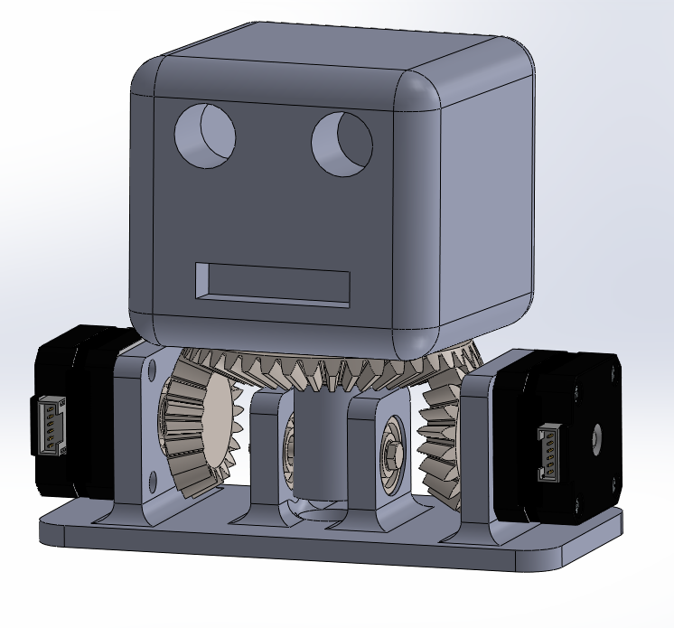
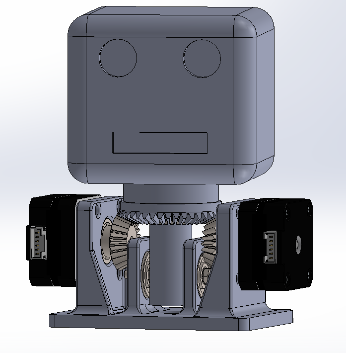
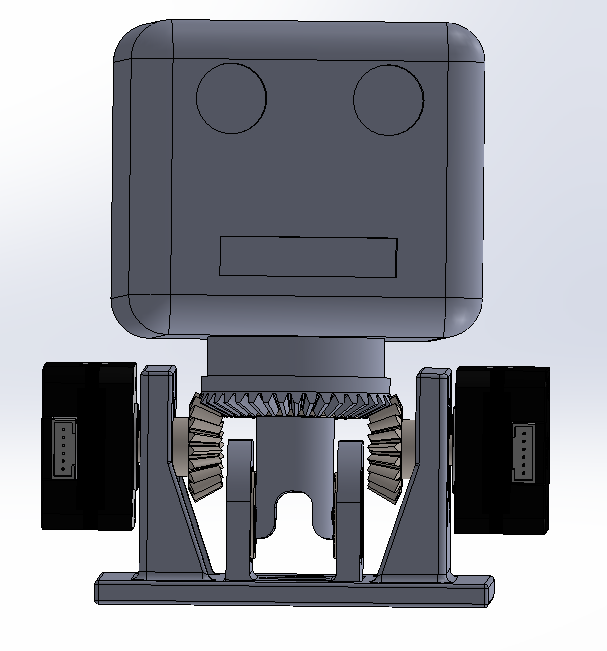
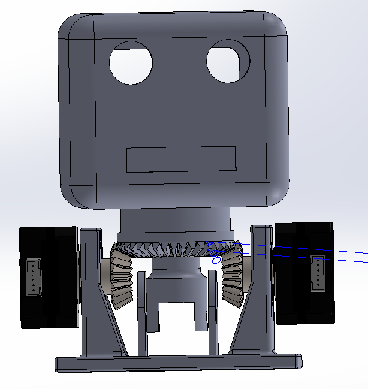
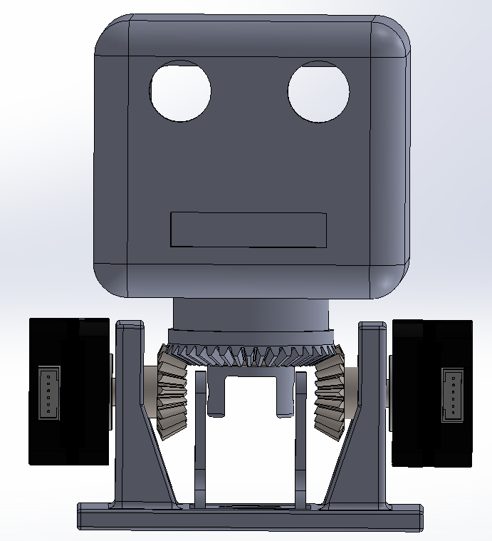
4.2 Final CAD and lessons
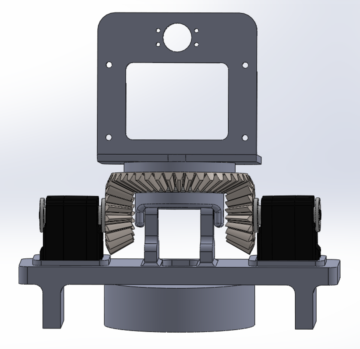
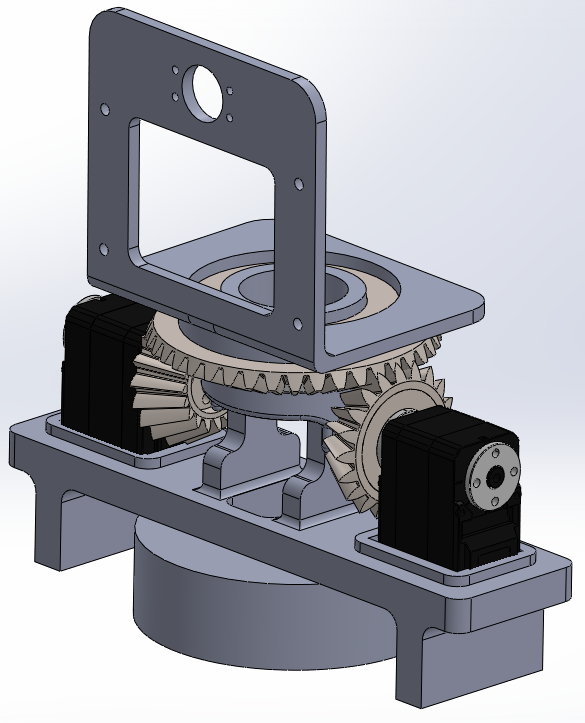
The final design has a minimal mount footprint, accessible fasteners, cables re-routed behind the servo bodies, the pivot on-axis with the crown, and the head payload cantilevered forward with its centre of mass close to the tilt axis to keep static torque low.
| Issue surfaced | Revision | Fix |
|---|---|---|
| Oversized form factor | P1 | Tighten envelope to motor, gearbox, and head payload only. |
| Cable clash with gear sweep | P2 | Route cables behind servo bodies. |
| Unprintable monolithic geometry | P3 | Section into halves along a tooth-load-aware plane. |
| Tilt pivot not concentric with crown | P4 / P5 | Move pivot into the gear-mesh plane. |
| Head payload off-axis sag | Final | Cantilever TFT and camera with CoM close to pivot. |
4.3 Assembled prototype
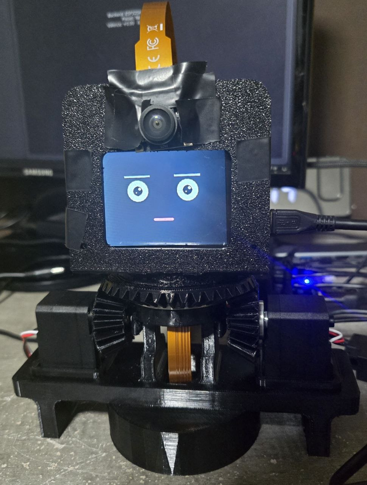
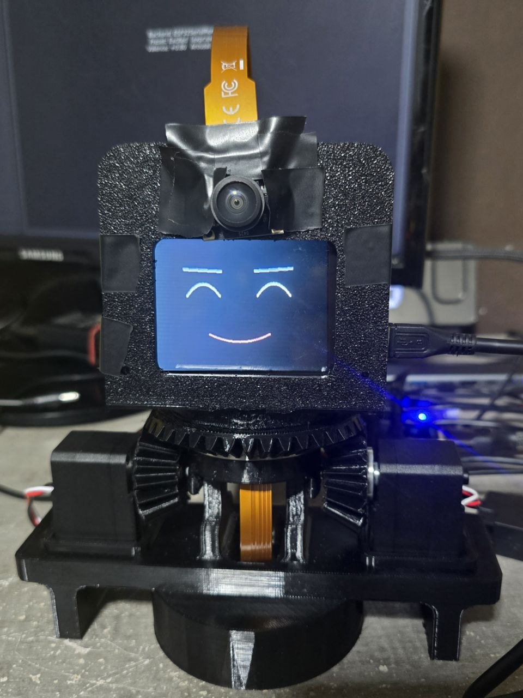
[affect: happy]The build sits on a 3D-printed PETG mount. Visible below the head are the 40-tooth crown and 20-tooth pinions; the two ST3215 servos are mirror-mounted with cables routed to the rear; a CSI ribbon runs up to the camera; and the 2.8 inch ESP32 TFT renders the face. The two states illustrate the display subsystem (Chapter 9) responding to affect commands from the LLM.
Only the screen and camera are held with tape on this prototype, a deliberately temporary fixture while the mounting geometry was iterated; every other component is already fastened mechanically. A final product iteration would replace the tape with a screwed-in housing (small M2 / M2.5 fasteners through the printed front panel) for rigid retention and serviceability.
5. Kinematics
With the final mechanism in place, the next question is how the two motor inputs map to head pan and tilt. This chapter derives the forward and inverse kinematics, describes the calibration procedure, and ends with a live demonstration of the closed loop.
5.1 The mechanism
The head is a classical two-input bevel differential.
- Two Feetech ST3215 servos, mirror-mounted.
- Each drives a 20-tooth bevel pinion.
- Both pinions mesh with a single 40-tooth crown gear on the head.
- Gear reduction:
G = 40 / 20 = 2.0.
The pinions mesh on opposite sides of the crown, so their rotations combine differentially.
- Same direction on both motors produces tilt.
- Opposite directions on the two motors produces pan.
The two head-frame degrees of freedom come from mixing the two motor inputs. There are no separate physical pan and tilt axes.
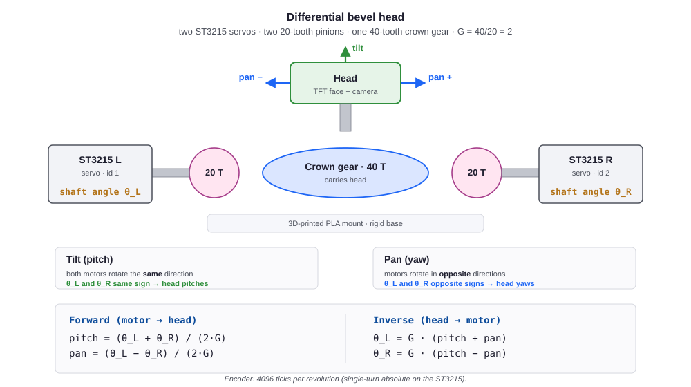
companion/motor/kinematics.py.5.2 Forward and inverse equations
Let θL and θR be the left and right motor rotations (radians, relative to calibrated zero). Let p and q be head tilt and pan.
The ST3215 uses a 4096-tick single-turn magnetic absolute encoder. Tick-radian conversion is therefore fixed:
5.3 Inverse pipeline (pose to ticks)
A commanded (pan, tilt) becomes a pair of tick setpoints in five stages. Every stage pulls its parameters from config.yaml; calibration fills those parameters in.
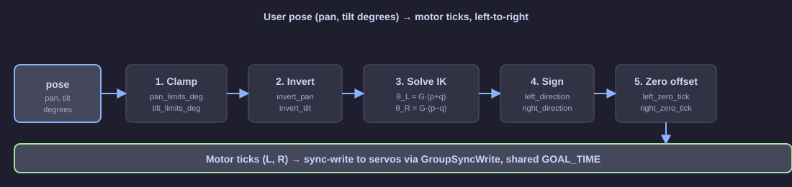
- Clamp. Saturate to
pan_limits_degandtilt_limits_degso the controller never commands past a stop. - Axis inversion. Flip pan or tilt per
invert_panandinvert_tilt. - Solve the inverse. θL = G·(pitch + pan), θR = G·(pitch − pan).
- Per-motor direction sign. Mirror-mounted servos run opposite senses; ±1 per motor is set during calibration.
- Zero-tick offset. Add
left_zero_tickandright_zero_tickto produce absolute encoder setpoints.
Both tick values go out through Feetech's GroupSyncWrite with the same GOAL_TIME. Without the shared GOAL_TIME, pure-pan commands produce a transient tilt because one motor reaches its target before the other.
5.4 Calibration and current values
Calibration is measured once per unit through a nine-page Qt wizard (companion/ui/calibration_window.py) that captures direction, zeros, limits, axis inversions, and gear ratio; the final page writes every value back to config.yaml. The step-by-step flow is in the repository motor README. Current values on this unit:
| Parameter | Value |
|---|---|
| Zero-tick offset (left / right) | 2514 / 2594 |
| Direction sign (left / right) | +1 / −1 |
| Gear ratio (measured; nominal 40/20) | 2.0 |
| Backlash | 1° |
| Axis inversion (pan / tilt) | false / false |
| Pan travel (soft limits) | ±37.97° |
| Tilt travel (soft limits) | ±8.06° |
5.5 Wizard and live demonstration
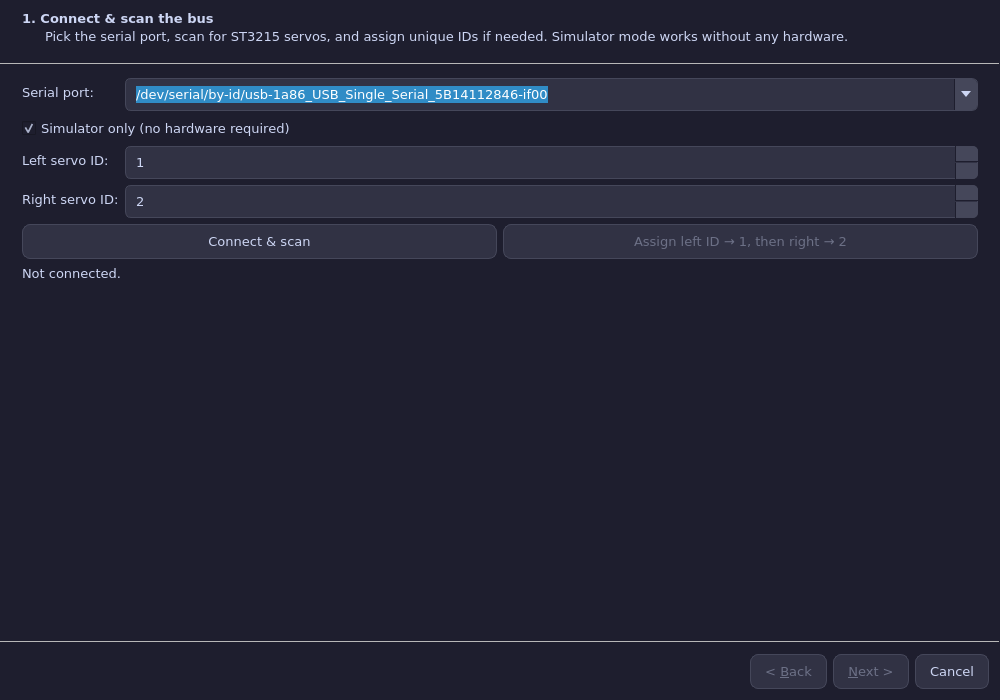
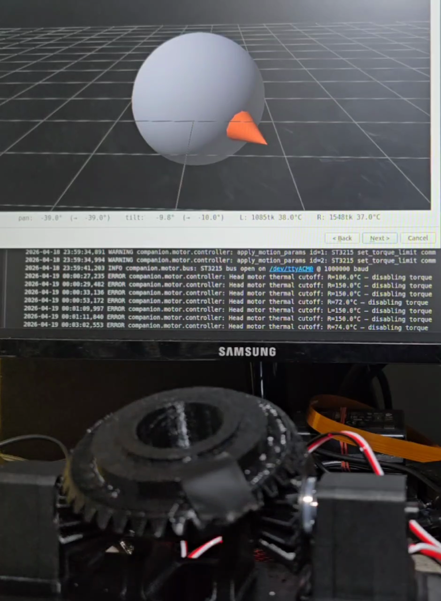
Each slider move traces the full closed loop: slider → inverse kinematics → GroupSyncWrite with shared GOAL_TIME → servo motion → 30 Hz encoder read-back → forward kinematics → 3D preview update. Shared GOAL_TIME is what keeps a pure-pan command pure (otherwise one motor finishes first and the head transiently tilts).
5.6 Safety systems
- Thermal cutoff. Per-servo temperature polled at 30 Hz; torque disabled above 65 °C (
motor.max_temperature_c). - Stall detection. If position error > 30 ticks (≈ 1.3° at the head) for > 1.5 s, the goal is overwritten with the current actual position; the servo stops pushing but still holds against gravity.
- Synchronised moves. All motion commands share a 150 ms
GOAL_TIME, so pure pan stays pure.
6. Perception subsystems
With the mechanical side out of the way, the rest of the report shifts to the software stack. This chapter covers the two perception branches that feed the rest of the system:
- Audio drives turn-taking and conversation.
- Vision drives face tracking and (in isolation) affect estimation.
Both run continuously. Their outputs feed the conversation stack in Chapter 7.
6.1 Audio pipeline
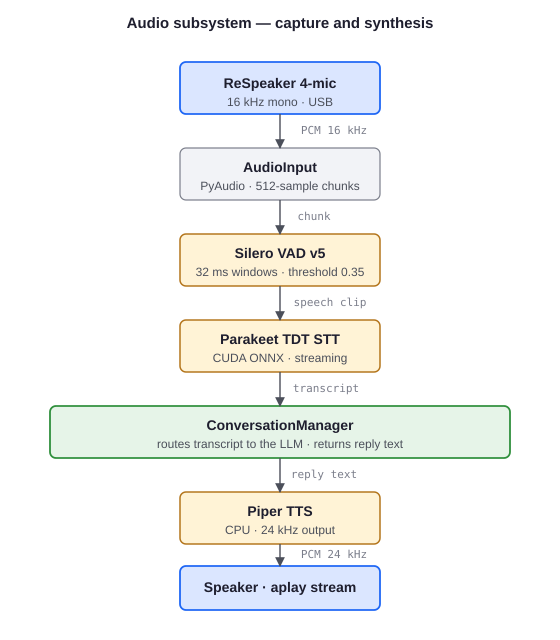
| Component | Implementation | Key parameters |
|---|---|---|
Captureaudio/io.py |
PyAudio stream (with arecord fallback); starvation watchdog at 2 s. |
16 kHz mono; 512-sample (32 ms) chunks. |
ReSpeaker DOAaudio/respeaker.py |
USB HID polling; drives the voice-face engagement gate; 12-LED ring feedback. | 10 Hz poll; calibrated offset −93.48°. |
VADaudio/vad.py |
Silero VAD v5 (Silero Team, 2023) ONNX on CPU. Four-state machine calls back into ConversationManager on SPEECH_START and SPEECH_END. | Threshold 0.35; 32 ms windows. |
STTaudio/stt.py |
Parakeet TDT 0.6B v3 ONNX on CUDA. Faster-whisper as fallback. | ~200 ms for a 5 s utterance. |
TTSaudio/tts.py |
Piper (CPU, near real-time) is default; Kokoro swappable via set_engine(). |
24 kHz output. |
Barge-inaudio/barge_in.py |
Four gates applied in series: AEC-lite envelope subtraction, VAD probability, SNR margin, and sustained-speech persistence. All four must pass before an interrupt is accepted. | SNR > 10 dB; persistence > 120 ms. |
6.2 Vision pipeline
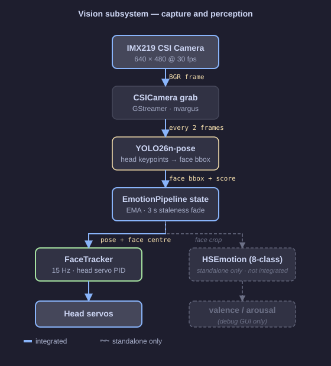
| Component | Implementation | Key parameters |
|---|---|---|
Cameravision/camera.py |
GStreamer nvarguscamerasrc (GPU) with V4L2 USB fallback; 1.2 s auto-exposure settle at startup. |
640 × 480 @ 30 fps. |
Face detectionvision/face_detector.py |
YOLO26n-pose (Jocher et al., 2024) keypoints (nose, eyes, ears) synthesise a face bbox. More robust on a wide-angle lens than a dedicated detector; eye midpoint is a better aim-point than a bbox centroid. | 15 Hz effective detection. |
Orchestratorvision/pipeline.py |
Top-level vision thread; smooths face position with EMA; fades confidence on face loss. Feeds the face tracker. | 30 fps thread; α = 0.7; 3 s staleness fade. |
7. Conversation and LLM stack
Perception feeds a turn-oriented conversation loop. The state machine (Figure 13) defines legal transitions; illegal ones fail loudly, preventing race conditions such as a late STT arrival after the user has already started a new turn. The turn sequence (Figure 14) is the speech-to-speech path, with the face branch firing on every reply.

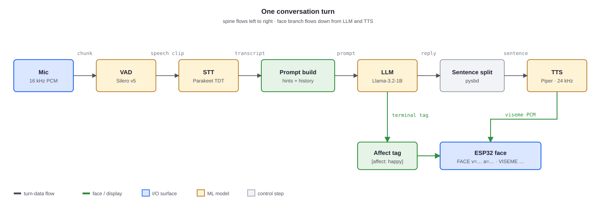
The ConversationManager (conversation/manager.py) owns the turn lifecycle: engagement gates, streaming STT, prompt assembly, LLM generation, streaming TTS, and event emission. Every phase stamps a timestamp into a per-turn TurnTrace.
The LLM engine (llm/engine.py) wraps llama-cpp-python. The shipped default is Llama 3.2 1B in 4-bit GGUF; Gemma-4-e2b, e4b, and the multimodal variant are a one-line config swap. Prompt assembly (llm/prompt.py) attaches up to three optional hint prefixes to the user message (emotion, scene, memory), each gated by whether its source subsystem is active. The system prompt asks the LLM to end every reply with an [affect: ...] tag; the tag is stripped before speaking and dispatched as a FACE command to the ESP32, driving the expression change visible in Figures 5–6.
8. Runtime infrastructure
The subsystems above are separate Python packages but share one process. Two concerns hold them together: a deterministic bring-up sequence that loads heavy models in the right order, and a small set of runtime services that every subsystem talks to instead of talking to each other.
8.1 Bring-up sequence
main.py boots in a fixed nine-step order (Table 1). The order is not cosmetic: on the Jetson's unified 8 GB memory pool, the LLM needs a single contiguous ~2 GB block. Every ONNX Runtime session (VAD, STT, YOLO, and friends) opens its own CUDA arena on first use, and loading even one of them before the LLM fragments the GPU heap enough that the LLM's big allocation fails mid-boot. Step 3 (highlighted) is therefore the load-bearing rule of the whole boot: LLM first, every other GPU consumer after.
| Step | Subsystem | Notes |
|---|---|---|
| 1 | Config, logging, readiness gate | Audits every model file path; fails loudly on missing models. |
| 2 | EventBus, GPU arbiter, Telemetry recorder | Core plumbing; must exist before any subsystem emits events. |
| 3 | LLM engine (quantised) | Critical: claims a contiguous ~2 GB VRAM block before any ONNX arena can fragment the heap. |
| 4 | Audio stack (VAD, STT, TTS, ReSpeaker) | ONNX sessions open CUDA arenas now, after the LLM block is secured. |
| 5 | Vision stack (camera, face detection) | Camera ring buffer and YOLO session start. |
| 6 | Motor stack (homing, face-tracker wire-up) | Head homes to calibrated zero; optional. |
| 7 | ConversationManager (turn orchestrator) | Wires audio → LLM → TTS with streaming hand-offs. |
| 8 | BehaviorEngine, Coordinator, HealthMonitor | Starts the 20 Hz face/motor tick and the 1 Hz watchdog. |
| 9 | Renderer (startup greeting, UI or headless loop) | Announces ready state and hands over to the event loop. |
Shutdown walks the reverse order with a 5 s hard timeout per subsystem, so a stuck thread cannot keep the process alive indefinitely.
8.2 Runtime services
Once bring-up completes, four small services carry the coordination load. The event bus is the spine (Figure 15): publishers emit typed events such as TurnStarted, AffectTag, and StateChanged on an async worker thread, and any number of subscribers can listen. Each handler runs inside its own try-except, so a crashing listener cannot stop the others. This is crucial in a long-running companion that should degrade gracefully rather than die. The remaining three services are summarised in the table below.
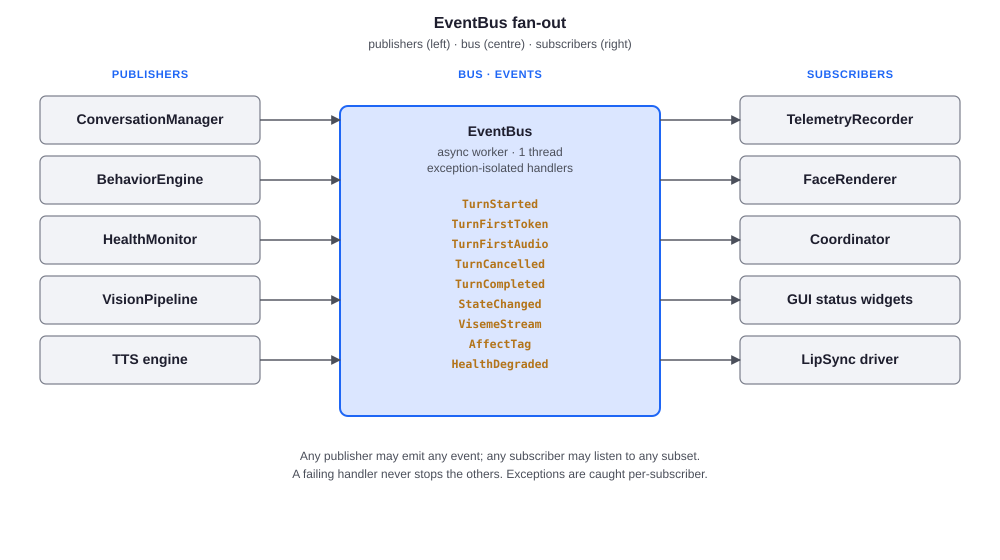
| Service | File | Purpose |
|---|---|---|
| GPU arbiter | core/gpu_arbiter.py | Cooperative two-priority lock. Realtime work (turn-time LLM, TTS) always wins; background work (scene captioning, telemetry) polls should_yield() and drops the lock when realtime waits. |
| Health + readiness | core/health.py, core/readiness.py | 1 Hz watchdog for mic starvation, stale camera frames, and motor over-temp; readiness audits every model-file path at startup and fails cleanly if a critical model is missing. |
| Telemetry | core/telemetry.py | Every turn writes a JSONL trace (logs/traces_<date>.jsonl) with phase timestamps, token counts, speaker label, and emotion snapshot. An in-memory ring of the last 100 turns feeds the GUI latency card with rolling p50 / p95. |
9. Display and face
The last user-facing piece is the face itself: the 2.8 inch touchscreen rendered on an ESP32, plus three Qt desktop windows used during development and calibration.
9.1 ESP32 firmware
The ESP32 runs an Arduino / PlatformIO firmware (firmware/companion_face/) using TFT_eSPI for the ILI9341 display and XPT2046_Touchscreen for the resistive touch panel. The face is drawn locally on the ESP32; the Jetson only sends abstract state commands.
9.2 Serial protocol
115 200 baud, line-delimited ASCII, bidirectional.
# Jetson → ESP32
FACE v=+0.72 a=+0.30 talk=1 listen=0 think=0 sleep=0 gaze=-12 privacy=0
VISEME ahh
SCENE face | quickgrid | morelist
PRIVACY 1 | 0
# ESP32 → Jetson
BTN mute_mic | stop_talking | sleep | more | timer | remind_me
TOUCH 120 185
BOOT companion_face9.3 Expression engine
Thirteen expressions are available.
- Derived from valence and arousal: neutral, happy, excited, surprised, sad, angry, calm.
- Explicit ornaments (when the valence-arousal circumplex of Russell (1980) is not specific enough): confused, thinking, idea, love, wink, listening.
The LLM's [affect: ...] tag selects among these. During SPEAKING, the chosen expression is blended with a lip-sync envelope from the TTS.
9.4 Real hardware face
The photographs in Chapter 4.3 are the display subsystem's actual output. Eye shape, eyebrow angle, and mouth curve respond to the affect tag. The same display renders the quick-tile menu (mute_mic, stop_talking, sleep, more) when touched.
9.5 Qt development GUIs
Three desktop windows support development and calibration.
| Window | File | Purpose |
|---|---|---|
| Main window | ui/main_window.py |
Three-column dashboard. Left: transcript + PTT. Centre: state indicator, emotion circumplex, scene caption. Right: DOA compass, mic RMS, STT latency, LLM token rate, system monitor. |
| Calibration wizard | ui/calibration_window.py |
Nine-page motor bring-up (Chapter 5.4). Page one shown in Figure 9. |
| Debug GUI | tests/debug_gui.py |
Five tabs, each exercising one subsystem: Audio (waveform, VAD, DOA), STT (record + transcribe + latency), LLM (one-shot chat), Vision (camera, face bbox, circumplex), Face (preset expressions on ESP32). |
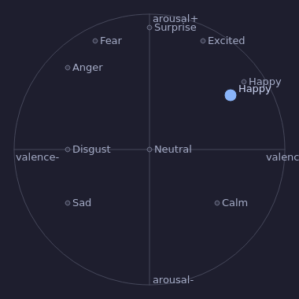
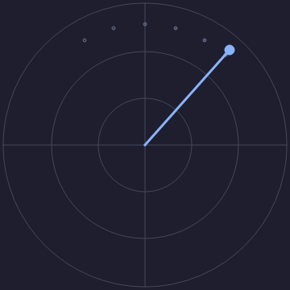
10. Testing and verification
The test surface is layered by cost and scope: fast deterministic tests at the bottom, slower integration tests above, and a progressive bring-up notebook at the top.
| Layer | Location | Covers |
|---|---|---|
| Unit | tests/unit/ | Config layering; event-bus exception isolation; GPU-arbiter priority; state-machine legality; turn barge-in; telemetry ring; affect-tag parser. Runtime < 2 s. |
| Kinematics | tests/test_motor_kinematics.py | Nine property-style tests on the pure-function kinematics (round-trip identity, limits clamping, pure pan/tilt, gear-ratio scaling, axis inversion, calibration, degrees–ticks). Caught several sign errors during bus bring-up. |
| Integration | tests/integration/ | Boot smoke (imports every module, constructs every object) and HealthMonitor watchdog (injected starved-mic condition). |
| CLI probes | tests/cli.py | Per-subsystem sanity: env, audio, stt, llm, tts, vision, face, pipeline. Bring-up acceptance check after a fresh install. |
| Notebook | setup_and_test.ipynb | Six progressive stages (dependencies → preflight → pytest → debug GUI → CLI → sim motors → real motors). Final stage produces a latency histogram from logs/traces_*.jsonl. |
The live still in Chapter 5.5 is the end-to-end integration evidence: calibration preview, motor-controller logs, and the physical head all respond to the same slider event on the same frame.
10.1 Manual bring-up testing
Beyond the automated tests, each subsystem was manually exercised during bring-up: head tracking by walking across the camera's view; voice in/out by conversational turns against the latency target; affect-tag to expression mapping by prompting for each of the thirteen tones and watching the ESP32 face respond; the DOA gate by speaking from different positions; and HSEmotion (standalone) by holding varied expressions and reading valence/arousal in the debug GUI. These walkthroughs caught most of the integration issues that unit tests could not see.
10.2 Structured user testing (future work)
The testing above confirms the engineering is sound, but not that the robot feels pleasant or intuitive to real users. Rigorous user testing with outside participants is out of scope for this proof-of-concept and is planned in the roadmap (Chapter 12): whether head tracking feels attentive, voice pacing feels natural, expressions match perceived tone, engagement gates fire in realistic rooms, and re-enabled HSEmotion cues improve perceived warmth.
11. Design under an 8 GB memory budget
This is the key chapter for anyone evaluating the shipped build. It explains why the integrated system looks the way it does. None of these decisions are architectural compromises. Every one of them is a resource decision, forced by the unified 8 GB memory budget on the Jetson Orin Nano.
11.1 The budget
The Jetson has 8 GB of unified memory. One DRAM pool serves CPU, GPU, and ISP buffers. After the OS, kernel, Python, and camera ring, roughly 5 GB is available for AI models and KV cache. Every model competes for the same pool; there is no separate VRAM to fall back on.
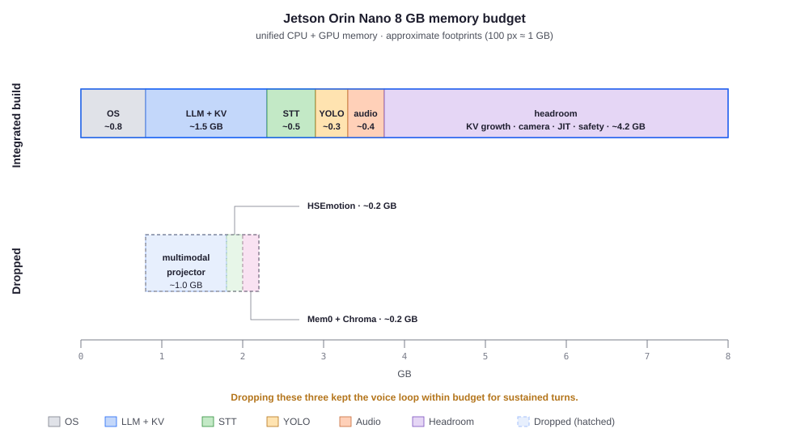
11.2 Two low-cost headroom wins
| Change | Problem it solves | Cost |
|---|---|---|
ONNX on CPUruntime.onnx_cuda_enabled: false |
Every ONNX Runtime session opens its own CUDA arena. Loading several ONNX sessions before the LLM fragments the GPU heap, and the LLM's single 1–2 GB contiguous allocation fails. | Silero VAD and YOLO run on CPU (they are small enough). Parakeet takes its CUDA session after the LLM has claimed its block. |
| Halved context length 1024 tokens vs stock default |
KV cache grows linearly with context; at full length, sustained turns pushed memory pressure too high. | None. System prompt (~120 tokens), per-turn hints, and six conversation exchanges fit comfortably; no overflow observed. |
11.3 Two headline gaps from the constraint
Text-only LLM. The original design targets a multimodal Gemma-4 that answers “what do you see?” by fusing a camera frame with the user's question. In isolation it worked, but on the fully-integrated 8 GB budget (with Parakeet, camera buffers, and YOLO all resident) it caused allocation failures mid-conversation. The shipped default is therefore Llama 3.2 1B, text-only. The multimodal path remains a one-line config swap.
SceneWatcher (background scene captioning) and the VQA branch (which answers “what is this?” by fusing the current camera frame with the user question) both exist in the codebase and are verified in isolation. The plumbing works; the multimodal model does not fit alongside everything else.
Emotion classification, not integrated. The HSEmotion classifier (Savchenko, 2023; vision/emotion_classifier.py) is functional in isolation. Running it alongside the face detector, LLM, Parakeet, TTS, and camera buffer pushed the 8 GB pool into swap or allocation failure during sustained turns. It is disabled in the integrated build to keep the voice loop reliable.
11.4 The focus principle and latency
The working rule was prioritise a reliable core loop, the minimum path a user depends on:
Optional subsystems (persistent memory, per-speaker ID, semantic end-of-utterance) are disabled in config rather than removed; they remain one flag away from re-enabling on a larger board. Latency target: end-of-speech to first TTS audio ≤ 800 ms, with interrupt latency ≈ 300 ms; measured p95 from JSONL traces is comparable on typical 5–8 word utterances.
12. Future work
This report is step one. The roadmap below turns the platform into a clinical-ready companion for elderly care, each step unlocking the next.
| Step | Change | What it unlocks |
|---|---|---|
| 2a | Move to a larger edge board (Orin NX 16 GB or AGX class). | Multimodal LLM, Parakeet STT, HSEmotion, and persistent memory all resident concurrently. Every downstream step inherits this. |
| 2b | Domain-specific LLM fine-tune on clinical data (LoRA; dataset prep through a potential NUS Nursing collaboration). | Vocabulary and tone for reminiscence prompts, daily-living reminders, dialect-aware small talk, safe phrasing around distress. |
| 2c | Re-enable HSEmotion in the integrated loop. | Live valence/arousal feeds every prompt; visible affect awareness. |
| 2d | Re-enable multimodal LLM path (SceneWatcher + VQA already wired). | “What do you see?” answers; scene-aware replies; object recognition for low-vision users. |
| 3a | Soft plush outer shell (Singapore-otter / NUS-Linus form factor). | The robot becomes something a user would actually pick up and hold. |
| 3b | Pressure-touch sensing on belly/head/tail regions. | Non-verbal input channel (the clinically-validated PARO interaction pattern). |
| 3c | Extra expressive DOF (e.g. tail) and custom “Hey Buddy” wake word (openWakeWord pipeline is already scaffolded). | Motion-based expression and wake-only interaction modes. |
| 4 | Structured clinical pilot (potentially with NUS Nursing). | Validates (or revises) every design decision above through engagement time, self-reported affect, and caregiver observation. |
13. Conclusion
The brief was to design an AI companion for emotional support of elderly individuals. This report delivers step one: the engineering platform. It has four working parts: a 2-DOF differential-bevel head with calibrated kinematics, a voice-interaction loop that listens, reasons and speaks without a network round-trip, a programmable touchscreen face that tracks conversation state, and a runtime architecture that keeps it all scheduled on a single 8 GB edge board.
The gap between the full design and the shipped integration (no multimodal replies; no affect perception running concurrently with the voice loop) is a resource story, not an architectural one. The plumbing for both is present and tested in isolation; both are one headroom improvement away from being live. The primary technical contribution at this stage is the mechanical head: a compact printable two-input gearbox that produces two independent head-frame DOFs from two off-the-shelf smart servos, bringable-up end-to-end through a wizard that writes calibration back to config. The forward roadmap in Chapter 12 builds on this platform.
Full source code, config reference, subsystem index, calibration procedure, and firmware are maintained in the project repository: github.com/Yogee-s/robotic-companion.
References
- Savchenko, A. V. (2023). HSEmotion: A real-time efficient facial expression recogniser. Open-source release. github.com/HSE-asavchenko/hsemotion
- Gerganov, G. (2023). llama.cpp: Inference of LLaMA models in pure C/C++. Open-source release. github.com/ggerganov/llama.cpp
- Ito, T. et al. (2013). "Effect of robot seal PARO on neuro-psychological symptoms in elderly individuals with dementia". Journal of the American Medical Directors Association, Vol 14(9), 661-667.
- Jocher, G. et al. (2024). Ultralytics YOLO26n-pose: Keypoint detection with a nano backbone. Open-source release. github.com/ultralytics/ultralytics
- Living.ai (2022). EMO: A petite desk pet with a mind of its own. Product documentation. living.ai/emo
- Mehrish, A., Majumder, N., Bharadwaj, R., Mihalcea, R. and Poria, S. (2023). "A review of deep learning techniques for speech processing". Information Fusion, Vol 99, 101869.
- NVIDIA (2024). Parakeet TDT 0.6B v3: Streaming transducer speech recognition. Hugging Face model release. huggingface.co/nvidia/parakeet-tdt-0.6b-v3
- Rhasspy Project (2023). Piper: A fast, local neural text-to-speech system. Open-source release. github.com/rhasspy/piper
- Russell, J. A. (1980). "A circumplex model of affect". Journal of Personality and Social Psychology, Vol 39(6), 1161-1178.
- Shibata, T. (2012). "Therapeutic seal robot as biofeedback medical device: Qualitative and quantitative evaluations of robot therapy in dementia care". Proc. IEEE, Vol 100(8), 2527-2538.
- Silero Team (2023). Silero VAD: Pre-trained enterprise-grade voice activity detector. Open-source release. github.com/snakers4/silero-vad
- Thingiverse (2022). Two-motor differential bevel-gear pan/tilt mechanism. Open-source CAD reference; concept basis for this project's head kinematics. thingiverse.com/thing:5438369
- Wada, K. and Shibata, T. (2007). "Living with seal robots: Its sociopsychological and physiological influences on the elderly at a care house". IEEE Trans. Robotics, Vol 23(5), 972-980.
- Yamamoto, Y. (2018). Qoobo: A therapeutic robot in the shape of a cushion with a tail. Yukai Engineering product documentation. qoobo.info